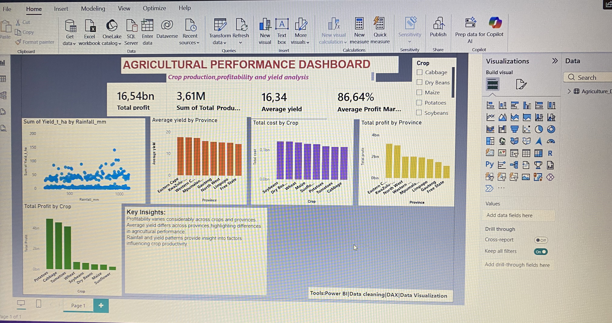

Junior Data Analyst | Excel | Power BI | SQL
Agriculture & Data Analytics
I am an aspiring Data Analyst with a background in Crop Production and practical training in data analytics. I enjoy cleaning, analysing and visualising data to identify useful insights and support better decision-making.

An interactive Power BI dashboard analysing agricultural production, yield and profitability across crops and provinces.
Tools: Power BI, DAX, Excel, Data Cleaning and Data Visualisation
Analysis of job and salary data using Excel to clean, organise and investigate salary patterns and job categories.
Tools: Excel and Data Analysis
A beginner SQL project involving agricultural data, database tables and queries for analysing structured data.
Tools: MySQL and SQL
Data Analytics / Data Foundations
Power BI Training
SQL Training
Excel Training
I am open to junior Data Analyst, Data Support and Data Entry opportunities.
LinkedIn: Add your LinkedIn profile
Email: Add your professional email